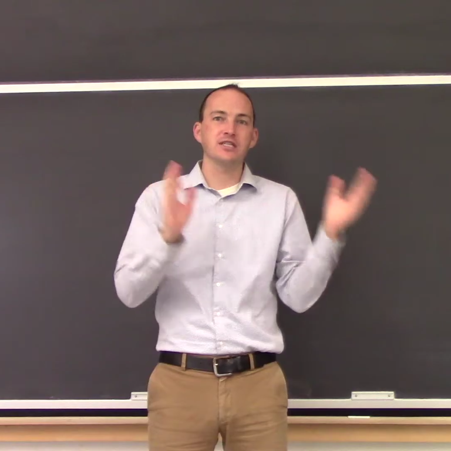

Jeffrey Hyde
Visiting Assistant Professor of Physics
Swarthmore College
Permanent Email: jmh137 at gmail dot com
Research Teaching Brief CV
I'm a physicist and visiting assistant professor doing research at the intersection of cosmology, particle physics and particle astrophysics. My current focus is on neutrino astrophysics, studying how existing and upcoming detectors can reveal neutrino properties and answer interesting questions about the universe. I have also worked on other topics in early universe cosmology, and observations of double star systems. If you are a student, there are always opportunities to work on a research project!
I am passionate about physics and astronomy education, especially realistic problem-solving, computation, and analysis of data. I have developed new courses and class activities, and have published an article on one of these. See my teaching page for more info!
When I'm not doing physics, I enjoy running marathons and being walked by my dog.